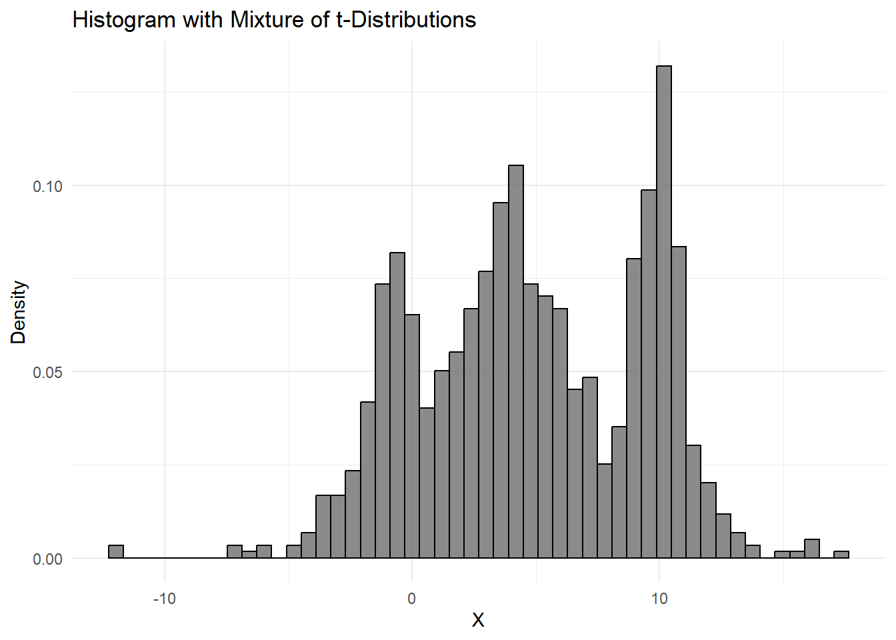
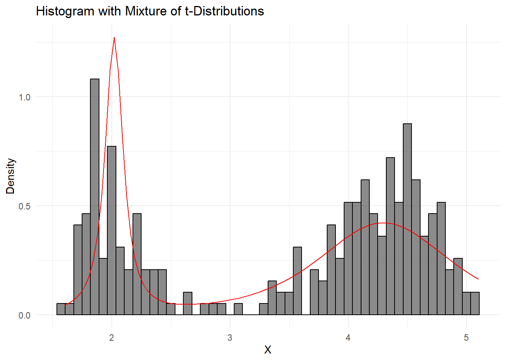

In this project, I will examine a mixture of K scaled and shifted t-distributions.
The scaled and shifted t-distributions have the following PDF. \[
f(x|\mu,\sigma,\nu)=\frac{\Gamma((\nu+1)/2)}{\sqrt{\pi\nu\sigma^2}\Gamma(\nu/2)}(1+\frac{(x-\mu)^2}{\nu\sigma^2})^{-(\nu+1)/2}
\]
The EM algorithm consists of a two-step optimization process to maximize the likelihood. In the Expectation (E) step, the posterior probabilities are calculated. In the Maximization (M) step, the likelihood is maximized to find the parameters, given the posterior probabilities.
Posterior probabilities (Expectation step)
The posterior probabilities correspond to the probability that an outcome is drawn from a given distribution. \[
P(Z=\pi_k|x_i)=\frac{P(x_i|Z=\pi_k)P(Z_i=\pi_k)}{P(x_i)}=\frac{\pi_kf(x_i|\mu_k,\sigma_k,\nu_k)}{\sum_{k=1}^{K}{\pi_k}f(x_i|\mu_k,\sigma_k,\nu_k)}=w(x_i)
\]
Maximization step M step:
In the M step, the coefficients \(\{\pi_k,\theta_k\}\) are estimated, where \(\theta_k=\{\mu_k,\sigma_k,\nu_k\}\)
Log Likelyhood
The simplification of writing makes it possible to express the density in the form \(f(x|\pi,\theta)\sum_{k=1}^K \pi_kf(x|\theta_k)\) where \(\theta_i=\{\mu_i,\sigma_i^2,\nu_i\}\).
Making the the likelihood \[
L(\pi_k,\theta_k)=\sum_{i=1}^{N}\sum_{k=1}^{K}\pi_kf(x_i|\theta_k)
\]
and the negative log likelihood. \[
l(\pi_k,\theta_k)=-\sum_{i=1}^{N} log(\sum_{k=1}^{K}\pi_kf(x_i|\theta_k))
\]
For the estimation of \(\pi_k\) Lagrange optimization can be used on the negative log-likelihood. It should be noted that \(\sum_{k=1}^{K}\pi_k =1\). corresponds to the linear constraint.
The Lagrange function becomes \[
\mathcal{L}(\pi_k)=-\sum_{i=1}^{N} log(\sum_{k=1}^{K}\pi_kf(x_i|\theta_k))-(\lambda\sum_{k=1}^{K}\pi_k-1)
\]
Lagrange optimization requires the objective function to be convex. Convexity can be checked using the second derivative.
Second derivative. \[
\frac{\partial^2 l(\pi_k,\theta_k)}{\partial^2 \pi_k}=\sum_{i=1}^{n}\frac{f(x_i|\theta_k)^2}{(\sum_{k=1}^{K}\pi_kf(x_i|\theta_k))^2}>0
\]
Since the second derivative of the negative log-likelihood is positive for all values of \(X\), the function is convex. This follows from the fact that \(f(x_i,\theta_k),\pi_k>0\) by the definition of probabilities.
The left side is the same as the weight, which is the posterior probabilities multiplied by \(\pi_k\).
This gives a condition for the optimal value. \[
\sum_{i=1}^{N}w(x_i)+\pi_k\lambda = 0 => -\frac{1}{\pi_k}\sum_{i=1}^{N}w(x_i) =\lambda
\]
But since \(\sum_{i=1}^{N}w(x_i)+\pi_k\lambda = 0\) must hold for all \(k\) and that \(\sum_{k=1}^{K}w(x_i)=1\), since these are the posterior probabilities. One can derive. \[
\begin{aligned}
0=\sum_{k=1}^{K}(\sum_{i=1}^{N}w(x_i)+\pi_k\lambda )=\sum_{k=1}^{K}\sum_{i=1}^{N}w(x_i)+\sum_{k=1}^{K}\pi_k\lambda =\sum_{k=1}^{K}\sum_{i=1}^{N}w(x_i)+\lambda \\ = \sum_{k=1}^{K}\sum_{i=1}^{N}w(x_i) -\frac{1}{\pi_k}\sum_{i=1}^{N}w(x_i)=\sum_{i=1}^{N}\sum_{k=1}^{K}w(x_i)
-\frac{1}{\pi_k}\sum_{i=1}^{N}w(x_i) \\
\sum_{i=1}^{N}\sum_{k=1}^{K}w(x_i)
-\frac{1}{\pi_k}\sum_{i=1}^{N}w(x_i)=N-\frac{1}{\pi_k}\sum_{i=1}^{N}w(x_i)\\ => \hat{\pi}_k= \frac{1}{N}\sum_{i=1}^{N}w(x_i)
\end{aligned}
\]
The estimate for the probability of drawing from a given distribution is the average of the weights.
Estiamtion of \(\theta_k=\{\mu_k,\sigma_k,\nu_k\}\)
The estimation of the parameters \(\theta_k={\mu_k,\sigma_k,\nu_k}\) is done by minimizing the negative log-likelihood.
As demonstrated below, the problem is that there is no closed-form solution. This arises from the fact that there is a sum in the denominator of the gradient.
Note that in the above, it is almost the sum of the weights, so it can be useful to express\(\frac{\partial f(x_i|\theta_k)}{\partial\theta_k}\) in terms of \(f(x_i|\theta_k)\), if possible.
Since \(\theta_k\) is a simplified notation for the parameters \(\{\mu_k,\sigma_k,\nu_k\}\), which are the parameters of interest to estimate, the derivatives with respect to these parameters will be calculated and substituted into the formula above.
In the next section, \(\frac{\partial f(x_i|\theta_k) }{\partial \theta_k}\) will be found with respect to \(\{\mu_k,\sigma_k,\nu_k\}\) and substituted into \(\frac{\partial l(\theta_k) }{\partial \theta_k}\) to give a formula for \(\frac{\partial l(\theta_k) }{\partial \theta_k}\) to provide a formula for \(\frac{\partial l(\theta_k) }{\partial \theta_k}\).
Finding the gradient of negativ log likelyhood for \(\nu_k\)
Note that a closed form does not seem possible since \(x_i\) appears in the denominator, and the sum cannot be split. However, the gradient can still be used for faster implementation.
Finding the gradient of negativ log likelyhood for \(\sigma_k\)
It can be useful to know that \[
\begin{aligned}
\frac{\partial \frac{\Gamma((\nu_k+1)/2)}{\Gamma(\nu_k/2)}}{\partial \nu} = \frac{\psi((\nu_k+1)/2)}{2\Gamma(\nu_k/2)}-\frac{\Gamma((\nu_k+1)/2)}{2\Gamma(\nu_k/2)^2}\psi(\nu_k/2)\\ =\frac{\psi((\nu_k+1)/2)}{2\Gamma((\nu_k+1)/2)}\frac{\Gamma((\nu_k+1)/2)}{\Gamma(\nu_k/2)}-\frac{\psi(\nu_k/2)}{2\Gamma(\nu_k/2)}\frac{\Gamma((\nu_k+1)/2)}{\Gamma(\nu_k/2)}
\end{aligned}
\]
All the gradients are computed. The goal is to obtain the maximum likelihood, but there is no closed-form solution. For some special cases, the functions might be approximated nicely. However, the gradients can still be used for gradient descent, which is the method I have chosen.
Gradient decent.
Gradient descent is used in the M step to optimize the parameters given the weights.
Two problems arise when using gradient descent. These are described below.
Undershooting the gradient out of domain.
If gradient descent undershoots and sets \(\nu_i<0\) ore \(\sigma_i<0\), the density is not defined. This is handled by setting a minimum value for the parameters \(\nu_i\) and \(\sigma_i\). This means that the minimum value for these parameters is not zero but a value close to zero.
Undershooting can also cause problems when using built-in optimization tools. A pro tip is that if you encounter NaN values as output during optimization, it’s a good idea to start debugging with this issue in mind. In my experience, there is not always a built-in check for these cases.
Gradient explotion
This does not fix the problem of gradient explosion. What happens is that the gradient decent may take too large a step in either direction. To make matters worse, the sum in the expression for the gradients can cause the gradients to grow as the sample size increases, which can lead to gradient explosion.
To combat this, I have tried different strategies. Below are the two method i tried described.
Normalising the gradient
When analyzing the gradient, it’s important to note that the sum is not divided by the size of \(X\)(denoted as \(N\)). This means that the absolute value of the gradient grows with \(N\). If gradient descent is used with a fixed learning rate \(\alpha\), problems may arise where the gradient either undershoots or overshoots. In an implementation setting, this issue is very apparent. However, in real-world problems where the true parameters are unknown, it is impossible to know if the estimated values are accurate.
There are two methods to address this issue: one is to check the norm of the gradient to see if you are near a local optimum, and the other is to increase the number of iterations. I have chosen to normalize the gradient by dividing by \(N\). This corresponds to choosing \(\alpha\) based on the size of \(X\).
Gradient clipping
Gradient clipping works by setting a maximum value for the norm of the gradient. Specifically, if \(|\nabla l(X,\pi,\theta)|>c\) then the gradient is scaled to \(\nabla l=c*\frac{\nabla l}{|\nabla l|}\). This allows you to set a maximum value for the norm of the gradient step.
Since this method is based on the norm of the entire gradient, it would be beneficial to vary the clipping based on the type of parameter \(\{\mu,\sigma,\nu\}\)., especially for \(\mu\). I have implemented a version where the clipping is based on different parameters.
In testing, it seems that gradient clipping is easy to use and works better. Therefore, in the implementation, gradient clipping is used.
Below is a summary of the gradient descent approach #Gradient decent. Gradient descent is used in the M step to optimize the parameters given the weights.
There is no closed-form solution for many of the gradients. To make matters worse, the sum in the expression for the gradients can cause the gradients to grow as the sample size increases, potentially leading to exploding gradients. If gradient descent undershoots and sets \(\nu_i<0\) or \(\sigma_i<0\), the density is not defined. I have addressed the issue of undershooting by setting a minimum value for the parameters \(\nu_i\) and \(\sigma_i\). This means that the minimum is not zero but a value close to zero.
However, this does not solve the problem of overshooting gradients. The solution to this issue is normalization. One strategy is to normalize the gradient by the sample size N. Another solution is to use gradient clipping. Gradient clipping works by setting a maximum value for the norm of the gradient. Specifically, if \(|\nabla l|>c\), then the gradient is set to \(\nabla l=c*\frac{\nabla l}{|\nabla l|}\). This allows you to set a maximum value for the norm of the gradient step. Since this method is based on the norm of the entire gradient, it would be beneficial to vary the clipping based on the type of parameter \(\{\mu,\sigma,\nu\}\), especially for \(\mu\).
I have implemented a version where the clipping is based on different parameter types. Specifically, if the gradient matrix column corresponding to a given parameter is normalized by its corresponding vector and scaled by a given constant for that parameter. If this explanation is confusing, refer to the function Gradient_clipping_vec in the Rcpp file, which is fairly self-explanatory.
Additionally, I have included a check to see if a steep step leads to smaller values in the objective function. If not, the gradient is scaled again by \(\alpha\).
Implentatsion notes for gradient decent
Since the EM algorithm is an iterative process and R handles loops poorly, Rcpp is used to run C++ code for faster implementation. This is a common approach in many libraries.
Combining it all to one EM function.
Since the EM algorithm is a two-step optimization process, it is not strictly necessary to find the smallest value in the M step. The critical aspect is that both steps lead to a decrease in the negative likelihood.
In terms of implementation, this affects the settings used for running gradient descent. For example, setting a maximum number of iterations too high can result in very long runtimes.
I have not found any definitive guidelines for tuning these parameters in general settings, so I have made it possible for the end user to adjust them as needed.
Initialization
The EM algorithm requires starting parameters, and if they are too far off, it can affect the runtime. I have chosen to use the hard clustering technique, k-means++, which provides a set of partitions. In each of these partitions, the scaled and shifted t-distributions are fitted and used as the starting parameters.
K-means++ works similarly to k-means, with the primary difference being in the initialization process. The goal of k-means is to minimize the objective function:
\(\underset{\mu}{\arg\min}\sum_{k=1}^{K}\sum_{i=1}^{N}|x_i-\mu_k|^2\) K-means++ improves on this by initially selecting one center randomly and then iteratively assigning points to the nearest center and updating the centers. It can be shown that this process will decrease the objective function, making it a greedy algorithm.
Potential problems
K-means has the potential problem of local minima. This can be illustrated in two dimensions by assigning points to the four corners of a square and using three of them as starting positions, which can lead to poor initializations.
The issue of non-uniqueness for optima should not be problematic in our case, as we are dealing with continuous distributions (or at least it seems unlikely).
K-means++ is also sensitive to outliers. This problem is present in the structure of the likelihood for mixture models as well. If there is a small cluster of outliers, the fitted t-distribution can become very sharp, giving a high likelihood to those points. This should be mitigated by ensuring that the probability of drawing from this distribution is very small. However, there is no guarantee that this is always the case. Essentially, this means that outliers may not be treated as such but rather as draws from a separate distribution.
Despite these issues, the method based on k-means++ still seems like the best option. Otherwise, one can set the starting parameters manually.
For estimating the individual t-distributions, we use the condition \(\nu >2\). Given this, we can use the following results:
\(\mathbb{E}[X]=\mu\) and \(Var(X)=\sigma^2\frac{\nu}{\nu-2}\rightarrow 2\frac{ Var(X)}{Var(X)-\sigma^2}=\nu\) ore \(Var(X)=\sigma^2\frac{\nu}{\nu-2}\rightarrow \sqrt{Var(X)\frac{\nu-2}{\nu}}=\sigma\)
Since this is only for initialization, if the parameters for the t-distributions are overshot, the EM algorithm should correct for it. The advantage is that with a good estimate of the parameters \(\mu\) and \(\nu\), and \(\sigma\), standard optimization can be used to estimate the last parameter based on the log likelihood.
This method often fails, so it may be better to use grid search or manual tuning.
GridSearch Initialization
In most cases, the method of using K-means partitions to estimate \(\mu\) and using the proportions to estimate \(\pi\) seems reasonable. So, I have implemented a version where GridSearch is used for the parameters \(\sigma\) and \(\nu\), which is what caused problems before. By doing this, one gets the advantage of the simplicity and relative speed of using K-means while obtaining usable starting parameters for \(\sigma\) and \(\nu\).
Measurs
If one wants to compare models, the Akaike Information Criterion (AIC) and the Bayesian Information Criterion (BIC) are available.
Code
Librays used.
Code
# Load required librarieslibrary(this.path) # find where you are# Note current script locationcurrent_script_directory <-this.dir()# library's to Rcpplibrary("Rcpp")library("RcppArmadillo")library("RcppGSL")sourceCpp("compstat.cpp")library(ClusterR)#KMeans_rcpp #kmeans++ works well and is in Rcpp# for fiting scaled and shifted t-distributionlibrary(fitdistrplus)library(MASS)# for paraleel gridseach in the intilasationlibrary(doParallel)library(foreach)
My own implented code i R.
Code
# build function in Rlibrary("metRology")library("extraDistr")#function for generating a vector of draws from a mixture T distribuationsDraw_mixture_componet <-function(Pi=c(0.2, 0.5, 0.3),Mu=c(0,25,50),Sigma=c(1,2,1),Nu=c(3,4,4),N_samples=1000){#sample mixture componets mixture_componoets_sample <-sample(x =1:length(Pi), size = N_samples, replace =TRUE, prob = Pi) draws=c(rep(0,N_samples))for (i in1:N_samples){ d_i=sample(x =1:length(Pi), size =1, replace =TRUE, prob = Pi) #draw_index = d_i draws[i]=rt.scaled(n =1, df = Nu[d_i], mean = Mu[d_i], sd = Sigma[d_i]) }return(draws)}# itnernall function of initialationinitialize_if_na <-function(var,# variabels K# numer of partions ) {if (any(is.na(var))) {return(rep(NA, K)) }return(var)}# estimation of PI by taking proportion of partionsEstiame_Pi_from_partions=function(Partions_vec,K){ Pi=c(rep(0,K))for (i in1:K){ Mid_vec=Partions_vec==i Pi[i]=sum(Mid_vec)/length(Partions_vec) }return(Pi)}# This is not the best parameter, but for now its better than guissing.# it seam to work well for well seperated distribuationsIntiall_parameter_optimasation<-function(X#Data from parametasion ){ Mu<-mean(X) variance=var(X) fn1<-function(s){sum(-(dlst(X, df=abs(s), mu = Mu, sigma =sqrt(variance*(abs(s)-2)/abs(s)) , log =TRUE)))} result <-optim(par =5, fn = fn1, method ="L-BFGS-B",lower =c(2+0.05)) Nu_val=(abs(result$par)) Sigma_val=sqrt(variance*(Nu_val-2)/Nu_val) return(c(Mu,Sigma_val,Nu_val))}Intiall_parameter<-function(X,#Data in vector formPi=NA,#Problillaty vectorMu=NA,# mean vectorSigma=NA,#Sigma vector Nu =NA, # NU vector K # Number of distribuations ){if(any(c(is.na(Pi),is.na(Mu),is.na(Sigma),is.na(Nu)))){# get partions KMeans_objet=KMeans_rcpp(as.matrix(X), clusters = K, num_init =30, initializer ='kmeans++') }if(any(is.na(Pi))){#Estimate Pi Pi=Estiame_Pi_from_partions(KMeans_objet$clusters,K) }if(any(c(is.na(Mu),is.na(Sigma),is.na(Nu)))){#Make sure their is vector Mu=initialize_if_na(Mu,K) Sigma=initialize_if_na(Sigma,K) Nu=initialize_if_na(Nu,K)for (i in1:K){ partin_data=X[KMeans_objet$clusters==i] partin_parameter=Intiall_parameter_optimasation(partin_data)if(is.na(Mu[i])){ Mu[i]=partin_parameter[1] }if(is.na(Sigma[i])){ Sigma[i]=partin_parameter[2] }if(is.na(Nu[i])){ Nu[i]=partin_parameter[3] } } } ret_obj=list(Mu = Mu,Sigma = Sigma,Nu=Nu,Pi=Pi)return(ret_obj)}# use kmeans to Pi estimate pi and muIntiall_parameter_grid=function(X,Pi,Mu,Sigma_grid,Nu_grid,K){if(any(c(is.na(Pi),is.na(Mu)))){# get partions KMeans_objet=KMeans_rcpp(as.matrix(X), clusters = K, num_init =30, initializer ='kmeans++') }if(any(is.na(Pi))){#Estimate Pi Pi=Estiame_Pi_from_partions(KMeans_objet$clusters,K) }if(any(is.na(Mu))){#Make sure their is vector Mu=initialize_if_na(Mu,K)for (i in1:K){ partin_data=X[KMeans_objet$clusters==i]if(is.na(Mu[i])){ Mu[i]=mean(partin_data) } } }#preform gridseach but only over paramters Sigma and nu#Finding combinations#Sigma_grid=as.numeric(seq(2,5))#make list with comnations Sigma_grid_combinations <-expand.grid(rep(list(Sigma_grid), K))#makes List of list whith every combantion in the seq Sigma_grid list_of_combinations_Sigma <-split(as.matrix(Sigma_grid_combinations), seq(nrow(Sigma_grid_combinations)))#Nu_grid=as.numeric(seq(2,10)) Nu_grid_combinations<-expand.grid(rep(list(Nu_grid), K)) list_of_combinations_Nu <-split(as.matrix(Nu_grid_combinations), seq(nrow(Nu_grid_combinations))) grid_for_seach=expand.grid(list_of_combinations_Sigma,list_of_combinations_Nu)# This can be paralised but, it mean define all the functions from Rcpp in R so they can be importet into the clusters#souch rcpp can export function to paralles so redefine functions# # Number of cores to use# num_cores <- detectCores() - 1 # supose to be nice to let one stand for other stuff# # Create a cluster# cl <- makeCluster(num_cores)# registerDoParallel(cl)# clusterExport(cl, c("loglikelyhood_t_mix", "X", "Pi", "Mu", "grid_for_seach"))# # results <- foreach(i = 1:nrow(grid_for_seach), .combine = rbind) %dopar% {# row <- grid_for_seach[i, ]# var1 <- as.vector(unlist((row[1]))) # var2 <- as.vector(unlist((row[2])))## # log_likelihood_val <- den_test(X, Pi, Mu, c(5,5,5), c(4,4,4)) # function can be importet to clusters so the method wont work# c(var1 = var1, var2 = var2, log_likelihood_val = log_likelihood_val) # }# stopCluster(cl) compute_log_likelihood <-function(row) { var1 <-as.vector(unlist(row[1])) var2 <-as.vector(unlist(row[2]))loglikelyhood_t_mix(X, Pi, Mu, var1, var2) } log_likelihood_values <-sapply(1:nrow(grid_for_seach), function(i) {compute_log_likelihood(grid_for_seach[i, ]) }) max_log_likelihood <-max(log_likelihood_values) max_index <-which.max(log_likelihood_values) Sigma=as.vector(unlist(grid_for_seach[max_index,]$Var1)) Nu=as.vector(unlist(grid_for_seach[max_index,]$Var2)) ret_obj=list(Mu = Mu,Sigma = Sigma,Nu=Nu,Pi=Pi,likelyhood=max_log_likelihood,Numer_of_combination=nrow(grid_for_seach))return(ret_obj)}#Kmeans is used to run make intiall partions, when Scaled shifted t distribuation is fitted on each partions.# This method works well when the distribuations is well seperated, but not if mixture distributuin is to close.#basically what happen if the partions is to close what happens is that partions do not look like t distribution, and can somtime even look like uniform distribution (basically far of), this make the estimation of the ustabel and sometimes lead to error, the solution is to come with some manuall inputs EM_Mix_T_Dist<-function(X,#Data in vector formPi=NA,#Problillaty vectorMu=NA,# mean vectorSigma=NA,#Sigma vector Nu =NA, # NU vector K, # Number of distribuationsClipping_vector=c(10,5,2),# Max value for clipping for parameters (Mu,Sigma,Ni)Max_iter=100,# maxium number of interations for the EM algorithmalpha=0.02,# scaling for gradient decentmax_iter_gradient=3,# maxium number of times in graident for each iteratinnorm_gradient =0.1, # stop criteria for gradient decentStart_method_optim=T){#Checking for intiations process#if no argument is given for Pi , Mu , Sigma and NU is given then a gues is madeif(Start_method_optim==T){ start_para=Intiall_parameter(X,Pi,Mu,Sigma,Nu,K) }else{ start_para=Intiall_parameter_grid(X,Pi,Mu,Sigma_grid=as.numeric(seq(1,15,2)),as.numeric(seq(2,10,2)),K) } Pi=start_para$Pi Mu=start_para$Mu Sigma=start_para$Sigma Nu=start_para$Nuif(any(c(is.na(Pi),is.na(Mu),is.na(Sigma),is.na(Nu)))){print("The intilasaions failed")return(NA) } #Run EM EM_partion=EM_t_distribution(X,Pi,Mu,Sigma,Nu,Clipping_vector = Clipping_vector,Max_iter=Max_iter,alpha=alpha,max_iter_gradient=max_iter_gradient,norm_gradient = norm_gradient)#Make return object likelyhood=likelyhood_t_mix(X,EM_partion[,4],EM_partion[,1],EM_partion[,2],EM_partion[,3]) loglikelyhood=loglikelyhood_t_mix(X,EM_partion[,4],EM_partion[,1],EM_partion[,2],EM_partion[,3]) AIC=2*K-2*loglikelyhood BIC=K*log(length(X))-2*loglikelyhood ret_obj=list(Mu = EM_partion[,1],Sigma = EM_partion[,2],Nu=EM_partion[,3],Pi=EM_partion[,4],AIC=AIC,BIC=BIC,likelyhood=likelyhood,loglikelyhood=loglikelyhood,weights=Weights_of_X(X,EM_partion[,4],EM_partion[,1],EM_partion[,2],EM_partion[,3]))return(ret_obj)}
Rcpp library
Click to expand/collapse the C++ code
#include <RcppArmadillo.h>#include <Rmath.h>#include <cmath>#include <RcppGSL.h>#include <gsl/gsl_sf_psi.h>// [[Rcpp::depends(RcppArmadillo)]]usingnamespace Rcpp;usingnamespace arma;usingnamespace std;// [[Rcpp::export]]double T_density(double x,double Mu,double Sigma,double Nu){return(Rf_gammafn((Nu +1)/2.0)/(Rf_gammafn(Nu /2.0)* sqrt(M_PI * Nu * pow(Sigma,2))))*pow((1+pow((x-Mu),2)/(Nu*pow(Sigma,2))),-(Nu+1)/2.0);}// [[Rcpp::export]]double Mix_T_density_x(double x, vec Pi, vec Mu, vec Sigma, vec Nu){ vec dens_of_x_for_each_t(Pi.n_elem);for(int i =0; i< Pi.n_elem;++i){dens_of_x_for_each_t[i]=Pi[i]*T_density(x,Mu[i],Sigma[i],Nu[i]);}double densdens_of_X=sum(dens_of_x_for_each_t);return densdens_of_X;}// [[Rcpp::export]]vec Mix_T_density(vec X, vec Pi, vec Mu, vec Sigma, vec Nu){ vec Dens_for_each_x(X.n_elem);for(int j=0; j<X.n_elem;++j){ Dens_for_each_x[j]= Mix_T_density_x(X[j],Pi,Mu,Sigma,Nu);}return(Dens_for_each_x);}// [[Rcpp::export]]double likelyhood_t_mix(vec X, vec Pi, vec mu, vec Sigma, vec Nu){return prod(Mix_T_density(X,Pi,mu,Sigma,Nu));}// [[Rcpp::export]]double loglikelyhood_t_mix(vec X, vec Pi, vec mu, vec Sigma, vec Nu){ vec densities = Mix_T_density(X, Pi, mu, Sigma, Nu);double log_likelihood = sum(log(densities));return log_likelihood;}// [[Rcpp::export]]mat Weights_of_X(vec X, vec Pi, vec mu, vec Sigma, vec Nu){//Row's is a given outcome Pi is the probiallty that it come from the j density mat Weigths(X.n_elem,Pi.n_elem);for(int i =0; i < X.n_elem;++i){ vec like_x_i(Pi.n_elem);// make vectorfor(int j=0;j<Pi.n_elem;++j){ like_x_i[j]=Pi[j]*T_density(X[i],mu[j],Sigma[j],Nu[j]);}for(int k=0;k<Pi.n_elem;++k){ Weigths(i,k)=like_x_i[k]/sum(like_x_i);}}return Weigths;}// [[Rcpp::export]]vec get_Pi(mat Weigths){if(Weigths.n_rows ==0){ Rcpp::stop("Input matrix has no rows");}return sum(Weigths,0).t()/ Weigths.n_rows;}// [[Rcpp::depends(RcppGSL)]]// [[Rcpp::export]]mat gradient(vec X, vec Pi, vec mu, vec Sigma, vec Nu, string normalise ="no_normaliztion"){// col mu ,Sigma, Nu mat Gradiets(Pi.n_elem,3);// find weights mat w_x = Weights_of_X(X,Pi,mu,Sigma,Nu);// mufor(int i =0; i < mu.n_elem;++i){double mu_i =0;for(int j =0; j < X.n_elem;++j){// mising weight mu_i=mu_i+w_x(j,i)*(X[j]-mu[i])/(Nu[i]*pow(Sigma[i],2)+pow(X[j]-mu[i],2));} mu_i = mu_i*(Nu[i]+1); mu_i =-mu_i; Gradiets(i,0)=mu_i;// sigmadouble sigma_i=0;for(int j =0; j < X.n_elem;++j){ sigma_i= sigma_i+w_x(j,i)*(-1+(Nu[i]+1)*pow(X[j]-mu[i],2)/(Sigma[i]*Nu[i]+pow(X[j]-mu[i],2)));} sigma_i=sigma_i/Sigma[i]; sigma_i=-sigma_i; Gradiets(i,1)=sigma_i;// nu// declare varibels for less coputdouble Gamma_v_plus_one= tgamma((Nu[i]+1)/2);double psi_v_plus_one= gsl_sf_psi((Nu[i]+1)/2);double Gamma_v = tgamma(Nu[i]/2);double psi_v = gsl_sf_psi(Nu[i]/2);double nu_i=0;for(int j =0;j < X.n_elem;++j){ nu_i=nu_i-0.5*w_x(j,i)+((Nu[i]+1)/2)*((pow(X[j]-mu[i],2))/(pow(Sigma[i]*Nu[i],2)))*w_x(j,i)+((psi_v_plus_one)/(2*Gamma_v_plus_one))*w_x(j,i)-((psi_v)/(2*Gamma_v))*w_x(j,i);} nu_i=-nu_i; Gradiets(i,2)=nu_i;}// Gradient normalsationif(normalise =="second_norm"){ Gradiets=Gradiets/norm(Gradiets,2);// second option based on dataX.n_elem;}if(normalise =="N_element"){ Gradiets=Gradiets/X.n_elem;}if(normalise =="Element_wise_Normalsation"){ Gradiets=Gradiets.col(0)/norm(Gradiets.col(0),2); Gradiets=Gradiets.col(1)/norm(Gradiets.col(1),2); Gradiets=Gradiets.col(2)/norm(Gradiets.col(2),2);}return Gradiets;}// [[Rcpp::export]]vec Maximum_of_two_vector(vec v1,vec v2){ vec v_out(v1.n_elem);for(int i =0;i<v1.n_elem;++i){ v_out[i]= max(v1[i],v2[i]);}return v_out;}//using overload to define to function based on the case where inmat Gradient_clipping_vec(mat gradient,vec C_levels=vec(3,1.0)){for(int i =0;i<gradient.n_cols;++i){if(norm(gradient.col(i),2)>C_levels[i]){ gradient.col(i)=C_levels[i]*gradient.col(i)/norm(gradient.col(i),2);}}return(gradient);}mat Gradient_clipping(mat gradient,double C_level=1){if(norm(gradient,2)>C_level){ gradient=C_level*gradient/norm(gradient,2);}return(gradient);}// Chosen not to export graident clibbing to R since i cant export to function with the same name./*I this section i have made multiple version of gradient decent.It could be combinede in to one function. I have keept it as threes versions so, since in the final EM one is gona be called as the standart.So insted of investing af lot time to writing it, this makes the flow faster.*/// [[Rcpp::export]]mat gradient_decent_no_check(vec X, vec Pi, vec mu, vec Sigma, vec Nu,double alpha=0.02,double Max_iter=1000,double norm_gradient =0.5, string normalise_method ="no_normaliztion"//this should be changed){ mat parameters(Pi.n_elem,3);// Set parameters value in matrix form (esay to update) parameters.col(0)=mu; parameters.col(1)=Sigma; parameters.col(2)=Nu; mat gradient_in_point = gradient(X,Pi,parameters.col(0),parameters.col(1),parameters.col(2),normalise_method);// Sigma_lower_bound_vec/* This is smart since it the if one overshoot the domain of the Gamma function is not definede */double parameter_min=0.01; vec Sigma_lower_bound_vec(Sigma.n_elem,fill::ones); Sigma_lower_bound_vec=parameter_min*Sigma_lower_bound_vec; vec Nu_lower_bound_vec(Nu.n_elem,fill::ones); Nu_lower_bound_vec=parameter_min*Nu_lower_bound_vec;// loop throug gradient decentfor(int i=0;i<Max_iter;++i){if(norm(vectorise(gradient(X,Pi,parameters.col(0),parameters.col(1),parameters.col(2),"no_normaliztion")),2)<norm_gradient){return parameters;} parameters=parameters-alpha*gradient_in_point;// If undershoot set to minimum Note is is importante that the check is done before the gradient is updated, otherwise the gradient will not be able to be evaluated parameters.col(1)=Maximum_of_two_vector(parameters.col(1),Sigma_lower_bound_vec); parameters.col(2)=Maximum_of_two_vector(parameters.col(2),Nu_lower_bound_vec);// update parametes gradient_in_point = gradient(X,Pi,parameters.col(0),parameters.col(1),parameters.col(2),normalise_method);}return parameters;}// [[Rcpp::export]]mat gradient_decent_with_check(vec X, vec Pi, vec mu, vec Sigma, vec Nu,double alpha=0.02,double Max_iter=1000,double norm_gradient =0.5, string normalise_method ="no_normaliztion",//this should be changeddouble max_it_in_check=10){ mat parameters(Pi.n_elem,3);// Set parameters value in matrix form (esay to update) parameters.col(0)=mu; parameters.col(1)=Sigma; parameters.col(2)=Nu; mat gradient_in_point = gradient(X,Pi,parameters.col(0),parameters.col(1),parameters.col(2),normalise_method);// make teperay variabel mat tem_parameters=parameters;// Sigma_lower_bound_vedouble parameter_min=0.01; vec Sigma_lower_bound_vec(Sigma.n_elem,fill::ones); Sigma_lower_bound_vec=parameter_min*Sigma_lower_bound_vec; vec Nu_lower_bound_vec(Nu.n_elem,fill::ones); Nu_lower_bound_vec=parameter_min*Nu_lower_bound_vec;// loop throug gradient decentfor(int i=0;i<Max_iter;++i){if(norm(vectorise(gradient(X,Pi,parameters.col(0),parameters.col(1),parameters.col(2),"no_normaliztion")),2)<norm_gradient){return parameters;}for(int j=0;j<max_it_in_check;j++){if(likelyhood_t_mix(X,Pi,parameters.col(0),parameters.col(1),parameters.col(2))<likelyhood_t_mix(X,Pi,tem_parameters.col(0),tem_parameters.col(1),tem_parameters.col(2))){break;} tem_parameters=parameters-alpha*gradient_in_point; gradient_in_point=alpha*gradient_in_point;} parameters=tem_parameters;// If undershoot set to minimum Note is is importante that the check is done before the gradient is updated, otherwise the gradient will not be able to be evaluated parameters.col(1)=Maximum_of_two_vector(parameters.col(1),Sigma_lower_bound_vec); parameters.col(2)=Maximum_of_two_vector(parameters.col(2),Nu_lower_bound_vec);// update parametes gradient_in_point = gradient(X,Pi,parameters.col(0),parameters.col(1),parameters.col(2),normalise_method);}return parameters;}// need to be made// [[Rcpp::export]]mat gradient_decent_T_mix_model(vec X, vec Pi, vec mu, vec Sigma, vec Nu,double alpha=0.02,double Max_iter=1000,double norm_gradient =0.5, string type_decent ="Normal", string normalise_method ="no_normaliztion",//this should be changeddouble max_it_in_check=10){ mat parameters(Pi.n_elem,3);// Set parameters value in matrix form (esay to update) parameters.col(0)=mu; parameters.col(1)=Sigma; parameters.col(2)=Nu; mat gradient_in_point = gradient(X,Pi,parameters.col(0),parameters.col(1),parameters.col(2),normalise_method);// make teperay variabel mat tem_parameters=parameters;// Sigma_lower_bound_vedouble parameter_min=0.01; vec Sigma_lower_bound_vec(Sigma.n_elem,fill::ones); Sigma_lower_bound_vec=parameter_min*Sigma_lower_bound_vec; vec Nu_lower_bound_vec(Nu.n_elem,fill::ones); Nu_lower_bound_vec=parameter_min*Nu_lower_bound_vec;// loop throug gradient decentfor(int i=0;i<Max_iter;++i){if(norm(vectorise(gradient(X,Pi,parameters.col(0),parameters.col(1),parameters.col(2),"no_normaliztion")),2)<norm_gradient){return parameters;}for(int j=0;j<max_it_in_check;j++){if(likelyhood_t_mix(X,Pi,parameters.col(0),parameters.col(1),parameters.col(2))<likelyhood_t_mix(X,Pi,tem_parameters.col(0),tem_parameters.col(1),tem_parameters.col(2))){break;} tem_parameters=parameters-alpha*gradient_in_point; gradient_in_point=alpha*gradient_in_point;} parameters=tem_parameters;// If undershoot set to minimum Note is is importante that the check is done before the gradient is updated, otherwise the gradient will not be able to be evaluated parameters.col(1)=Maximum_of_two_vector(parameters.col(1),Sigma_lower_bound_vec); parameters.col(2)=Maximum_of_two_vector(parameters.col(2),Nu_lower_bound_vec);// update parametes gradient_in_point = gradient(X,Pi,parameters.col(0),parameters.col(1),parameters.col(2),normalise_method);}return parameters;}// Gradient decent whit clipping//// [[Rcpp::export]]mat gradient_decent_with_clipping(vec X, vec Pi, vec mu, vec Sigma, vec Nu, vec Clipping_vector,double alpha=0.02,int Max_iter=1000,double norm_gradient =0.5,int max_it_in_check=10){// make mat for parameters mat parameters(Pi.n_elem,3);// Set parameters value in matrix form (esay to update) parameters.col(0)=mu; parameters.col(1)=Sigma; parameters.col(2)=Nu; mat gradient_in_point = gradient(X,Pi,parameters.col(0),parameters.col(1),parameters.col(2),"no_normaliztion");// make teperay variabel mat tem_parameters=parameters;// Make lover bound for parameterdouble parameter_min=0.01; vec Sigma_lower_bound_vec(Sigma.n_elem,fill::ones); Sigma_lower_bound_vec=parameter_min*Sigma_lower_bound_vec; vec Nu_lower_bound_vec(Nu.n_elem,fill::ones); Nu_lower_bound_vec=parameter_min*Nu_lower_bound_vec;// loop throug gradient decentfor(int i=0;i<Max_iter;++i){// make check for gradient size if(norm(vectorise(gradient(X,Pi,parameters.col(0),parameters.col(1),parameters.col(2),"no_normaliztion")),2)<norm_gradient){return parameters;}//graident clipping prcedorure//mat Gradient_clipping_vec(mat gradient,vec C_levels=vec(3,1.0)) gradient_in_point=Gradient_clipping_vec(gradient_in_point,Clipping_vector);//check if gradient result in small likelyhood.for(int j=0;j<max_it_in_check;j++){if(likelyhood_t_mix(X,Pi,parameters.col(0),parameters.col(1),parameters.col(2))<likelyhood_t_mix(X,Pi,tem_parameters.col(0),tem_parameters.col(1),tem_parameters.col(2))){break;} tem_parameters=parameters-alpha*gradient_in_point; gradient_in_point=alpha*gradient_in_point;// this contiues aplies alpha to the graiden } parameters=tem_parameters;// If undershoot set to minimum Note is is importante that the check is done before the gradient is updated, otherwise the gradient will not be able to be evaluated parameters.col(1)=Maximum_of_two_vector(parameters.col(1),Sigma_lower_bound_vec); parameters.col(2)=Maximum_of_two_vector(parameters.col(2),Nu_lower_bound_vec);// update parametes gradient_in_point = gradient(X,Pi,parameters.col(0),parameters.col(1),parameters.col(2),"no_normaliztion");}return parameters;}// [[Rcpp::export]]mat optimize_using_gradient_decent(vec X, vec Pi, vec mu, vec Sigma, vec Nu,double alpha=0.02,int Max_iter=1000,double norm_gradient =0.5, string normalise_method ="no_normaliztion",//this should be changedbool Check_gradient_decrease =true,int max_it_in_check=100){if(Check_gradient_decrease==false){return(gradient_decent_no_check(X,Pi,mu,Sigma,Nu,alpha,Max_iter,norm_gradient,normalise_method));}else{return(gradient_decent_with_check(X,Pi,mu,Sigma,Nu,alpha,Max_iter,norm_gradient,normalise_method,max_it_in_check));}}// [[Rcpp::export]]mat EM_t_distribution(vec X, vec Pi, vec mu, vec Sigma, vec Nu, vec Clipping_vector,int Max_iter =10000,double alpha=0.02,int max_iter_gradient=100,double norm_gradient =0.001){ mat parameters(Pi.n_elem,4);// Set parameters value in matrix form (esay to update) parameters.col(0)=mu; parameters.col(1)=Sigma; parameters.col(2)=Nu; mat w_x=Weights_of_X(X,Pi,mu,Sigma,Nu); parameters.col(3)=get_Pi(w_x);for(int i=0;i<Max_iter;++i){ w_x=Weights_of_X(X,parameters.col(3),parameters.col(0),parameters.col(1),parameters.col(2)); parameters.col(3)=get_Pi(w_x); parameters.cols(0,2)=gradient_decent_with_clipping(X,parameters.col(3),parameters.col(0),parameters.col(1),parameters.col(2),Clipping_vector,alpha,Max_iter,norm_gradient,max_iter_gradient);}return parameters;}
Code for visulsations.
Code
#code for visualasationlibrary(ggplot2)
Warning: package 'ggplot2' was built under R version 4.4.2
Code
Plot_mix_t_distribution <-function(X,Pi,Mu,Sigma,Nu,bins=30){ plot_fun<-function(x){sapply(x,function(x){Mix_T_density_x(x,Pi,Mu,Sigma,Nu)})} plot <-ggplot(data.frame(X), aes(x = X)) +geom_histogram(aes(y = ..density..), bins = bins, color ="black", alpha =0.7) +stat_function(fun = plot_fun, geom ="line",color="red")+labs(title ="Histogram with Mixture of t-Distributions", x ="X", y ="Density") +theme_minimal() return(plot)}
Test
Below, I have created a small test of the application with a mixture of three well-separated distributions.
Warning: Removed 101 rows containing missing values or values outside the scale range
(`geom_line()`).

Above, I have drawn from a mixture model with three components and fitted a three-component mixture model using automated initialization, even though there are three distinct peaks. The initialization fails.
Below, there is a second example, again with three components, but in this case, it is not easy to tell if there are two or three components.
par(mfrow =c(1, 1))#if one runs the stadart implentasion here the starting guase would fail.#model<-EM_Mix_T_Dist(draws,K=3)
In the above, the histograms of the fractions generated from the K-means++ are shown. Cluster 1 is the well-separated cluster. The rest of the partitions do not resemble a T-distribution, which seems to lead to the high values of \(\nu\)
The above is generated from mixing three t-distributions but could look like two distributions. My implementation for standardization will, in this case, fail. It will return since the value of gradient becomes to high do to large value of \(\nu\).
Below, I showcase how one can manually tune the input and run the method.
Code
Pi_test=Estiame_Pi_from_partions(KMeans_objet$clusters,K=3)mu_test=c(mean(draws[KMeans_objet$clusters==1]),mean(draws[KMeans_objet$clusters==2]),mean(draws[KMeans_objet$clusters==3]))# here is to example on how to hand fit the values par(mfrow =c(1, 2))Plot_mix_t_distribution(draws,Pi_test,mu_test,c(1,2,3),c(2.5,2.5,4),bins=100)
The method based on the grid search is computational expensiv but can give good result.
Why the initialization fails.
If the starting values are too extreme, such as \(\nu_i=50000\), the gradient cannot be computed properly due to issues with the gamma function or its derivative. As it stands, the initialization can produce such problematic values if the data from k-means is not well-behaved. If the distribution is not well-separated, the hard clustering technique will not capture enough of the distribution in the decreasing part as the function moves out. This can lead to excessively high values of \(\nu\).
Aplicantion on real data
Code
library(mixsmsn)# Load the datasetdata_real_test<-as.vector( unlist(faithful$eruptions))paramenter=Intiall_parameter_grid(data_real_test,Pi=NA,Mu=NA,Sigma=seq(0.1,4,0.5),Nu=seq(1,3,0.5),K=2)model<-EM_Mix_T_Dist(data_real_test,Pi=paramenter$Pi,Mu=paramenter$Mu,Sigma = paramenter$Sigma,Nu=paramenter$Nu,K=2,max_iter_gradient =40,Max_iter =200 )Plot_mix_t_distribution(data_real_test,model$Pi,model$Mu,model$Sigma,model$Nu,bins=50)

Above, I have applied the method to real-world data from the Old Faithful geyser in Yellowstone National Park. The y-axis represents the eruption height. I had to manually feed the grid optimization into the function to get some decent starting values, and I had to run the application more times than the standard, but overall, the method works.
Pro-tip: Potentially, one can speed up the process by hand-tuning the grid search.
Further improvements
Model selection
Further improvements should be made to the initialization process, as this would enable automatic model selection based on AIC or BIC.
confidence bands
Implementing confidence bands using a parametric bootstrap approach would be beneficial. Their is small complication since \(\pi_i\) label ambiguity. For faster implementation, the bootstrap process could utilize a “hot start,” meaning setting the starting values for the parameters to the estimated values.
Initialization
The initialization could run in parallel for both the grid search and the optimization method. It seems like R won’t import functions defined in a separate Rcpp file to the cluster. There are two options: define the necessary functions and dependent functions directly in R via the RcppFunction, or do the parallelization in Rcpp. Doing the parallelization directly in Rcpp would be better.
Gradient decent.
It would be nice if the gradient descent could use more iterations in the later steps. This is fairly easy to implement, but for an end-user and for me, it’s hard to set a good standard setting. Potentially, some of the same effect can be achieved by increasing the number of iterations since if the weights don’t change, it would almost be the same.